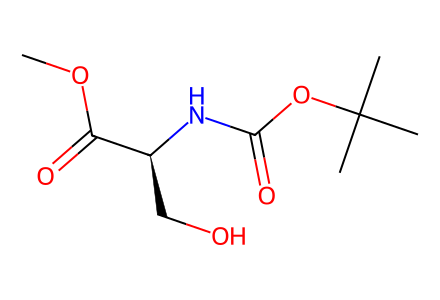
COC(=O)[C@H](CO)NC(=O)OC(C)(C)CAll source-shown successful forward-route and control products in main Schemes 2/4. SI is unavailable locally; literature preparation of prenylproline 11 and alternative tryptophan preparations mentioned in SI remain explicit boundaries. Mechanistic transient species in Scheme 3/4 are not isolated products. Facts compiled deterministically; independent review pending.
完整 JSON · 逐步 CSV · 路线序列 · SDF · HRMS 核对
| 事件 | 分子连接 | 报告产率 | Canonical reaction SMILES |
|---|---|---|---|
| E01 | 10 → 12 | 12: 68% | COC(=O)[C@H](CO)NC(=O)OC(C)(C)C>>COC(=O)[C@@H]1COS(=O)(=O)N1C(=O)OC(C)(C)C |
| E02 | 9 + 12 → 13 | 13: 37% | COC(=O)[C@@H]1COS(=O)(=O)N1C(=O)OC(C)(C)C.Clc1ccc2cc[nH]c2c1>>COC(=O)[C@H](Cc1c[nH]c2cc(Cl)ccc12)NC(=O)OC(C)(C)C |
| E03 | 13 → 5 | 5: 85% | COC(=O)[C@H](Cc1c[nH]c2cc(Cl)ccc12)NC(=O)OC(C)(C)C>>CC(C)(C)OC(=O)N[C@@H](Cc1c[nH]c2cc(Cl)ccc12)C(=O)O |
| E04 | 5 + 11 → 14 | 14: 76% | CC(C)(C)OC(=O)N[C@@H](Cc1c[nH]c2cc(Cl)ccc12)C(=O)O.COC(=O)[C@@]1(CC=C(C)C)CCCN1>>COC(=O)[C@@]1(CC=C(C)C)CCCN1C(=O)[C@H](Cc1c[nH]c2cc(Cl)ccc12)NC(=O)OC(C)(C)C |
| E05 | 14 → 8a | 8a: 80% | COC(=O)[C@@]1(CC=C(C)C)CCCN1C(=O)[C@H](Cc1c[nH]c2cc(Cl)ccc12)NC(=O)OC(C)(C)C>>CC(C)=CC[C@]12CCCN1C(=O)[C@H](Cc1c[nH]c3cc(Cl)ccc13)NC2=O |
| E06 | 8a → 8b | 8b: 83% | CC(C)=CC[C@]12CCCN1C(=O)[C@H](Cc1c[nH]c3cc(Cl)ccc13)NC2=O>>COCN1C(=O)[C@@]2(CC=C(C)C)CCCN2C(=O)[C@@H]1Cc1cn(COC)c2cc(Cl)ccc12 |
| E07A | 8b → 15 | 15: 87% | COCN1C(=O)[C@@]2(CC=C(C)C)CCCN2C(=O)[C@@H]1Cc1cn(COC)c2cc(Cl)ccc12>>C=C(C)[C@@H]1C[C@]23CCCN2C(=O)[C@@]1(Cc1cn(COC)c2cc(Cl)ccc12)N(COC)C3=O |
| E07B | 8b → 15 | 15: 44% | COCN1C(=O)[C@@]2(CC=C(C)C)CCCN2C(=O)[C@@H]1Cc1cn(COC)c2cc(Cl)ccc12>>C=C(C)[C@@H]1C[C@]23CCCN2C(=O)[C@@]1(Cc1cn(COC)c2cc(Cl)ccc12)N(COC)C3=O |
| E08 | 15 → 16 | 16: 68% | C=C(C)[C@@H]1C[C@]23CCCN2C(=O)[C@@]1(Cc1cn(COC)c2cc(Cl)ccc12)N(COC)C3=O>>C=C(C)[C@@H]1C[C@]23CCCN2C(=O)[C@@]1(Cc1cn(CO)c2cc(Cl)ccc12)NC3=O |
| E09 | 16 → 17 | 17: 52% | C=C(C)[C@@H]1C[C@]23CCCN2C(=O)[C@@]1(Cc1cn(CO)c2cc(Cl)ccc12)NC3=O>>CC1(C)c2[nH]c3cc(Cl)ccc3c2C[C@@]23NC(=O)[C@]4(CCCN4C2=O)C[C@@H]13 |
| E10 | 17 → 1 | 1: 36% | CC1(C)c2[nH]c3cc(Cl)ccc3c2C[C@@]23NC(=O)[C@]4(CCCN4C2=O)C[C@@H]13>>CC1(C)c2[nH]c3cc(Cl)ccc3c2C[C@@]23CN4CCC[C@]4(C[C@@H]12)C(=O)N3 |
| E11 | 8a → 20 | 20: 59% | CC(C)=CC[C@]12CCCN1C(=O)[C@H](Cc1c[nH]c3cc(Cl)ccc13)NC2=O>>CC(C)=CC[C@]12CCCN1C(=O)[C@@H]1C[C@]3(ON4C(C)(C)CCCC4(C)C)c4ccc(Cl)cc4N[C@@H]3N1C2=O |
| E12 | 15 → 17 + 23 | 17: 24%; 23: 24% | C=C(C)[C@@H]1C[C@]23CCCN2C(=O)[C@@]1(Cc1cn(COC)c2cc(Cl)ccc12)N(COC)C3=O>>C=C(C)[C@@H]1C[C@]23CCCN2C(=O)[C@]12Cc1c([nH]c4cc(Cl)ccc14)CN2C3=O.CC1(C)c2[nH]c3cc(Cl)ccc3c2C[C@@]23NC(=O)[C@]4(CCCN4C2=O)C[C@@H]13 |

COC(=O)[C@H](CO)NC(=O)OC(C)(C)C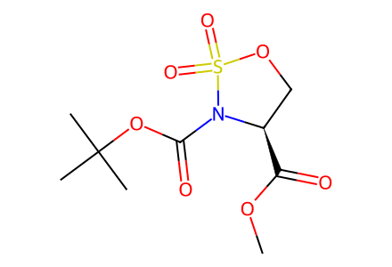
COC(=O)[C@@H]1COS(=O)(=O)N1C(=O)OC(C)(C)C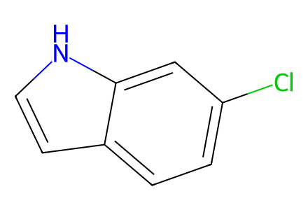
Clc1ccc2cc[nH]c2c1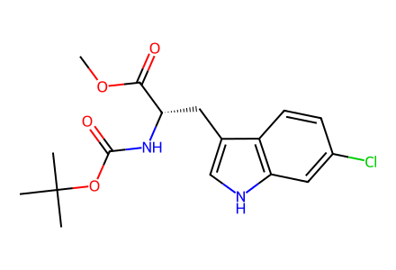
COC(=O)[C@H](Cc1c[nH]c2cc(Cl)ccc12)NC(=O)OC(C)(C)C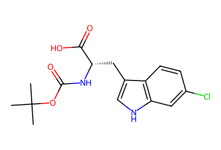
CC(C)(C)OC(=O)N[C@@H](Cc1c[nH]c2cc(Cl)ccc12)C(=O)O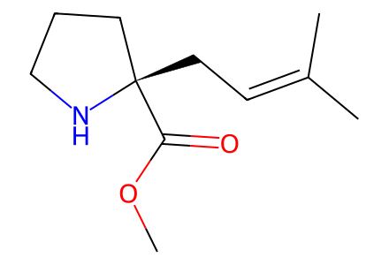
COC(=O)[C@@]1(CC=C(C)C)CCCN1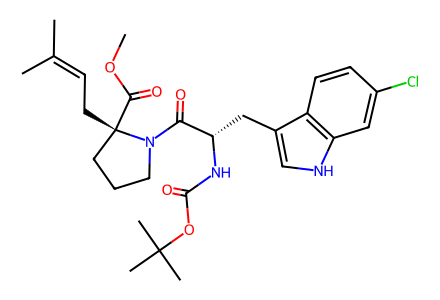
COC(=O)[C@@]1(CC=C(C)C)CCCN1C(=O)[C@H](Cc1c[nH]c2cc(Cl)ccc12)NC(=O)OC(C)(C)C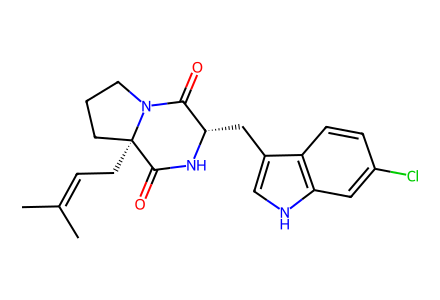
CC(C)=CC[C@]12CCCN1C(=O)[C@H](Cc1c[nH]c3cc(Cl)ccc13)NC2=O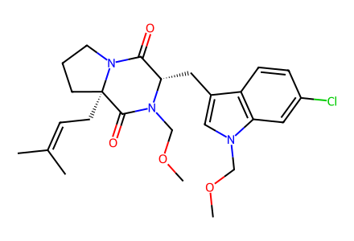
COCN1C(=O)[C@@]2(CC=C(C)C)CCCN2C(=O)[C@@H]1Cc1cn(COC)c2cc(Cl)ccc12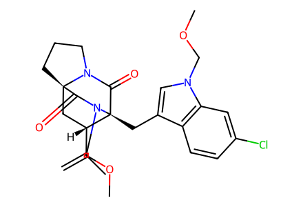
C=C(C)[C@@H]1C[C@]23CCCN2C(=O)[C@@]1(Cc1cn(COC)c2cc(Cl)ccc12)N(COC)C3=O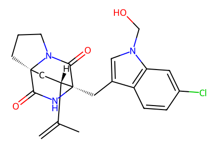
C=C(C)[C@@H]1C[C@]23CCCN2C(=O)[C@@]1(Cc1cn(CO)c2cc(Cl)ccc12)NC3=O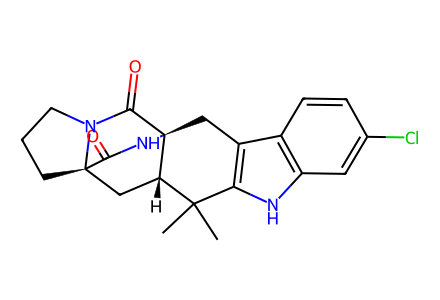
CC1(C)c2[nH]c3cc(Cl)ccc3c2C[C@@]23NC(=O)[C@]4(CCCN4C2=O)C[C@@H]13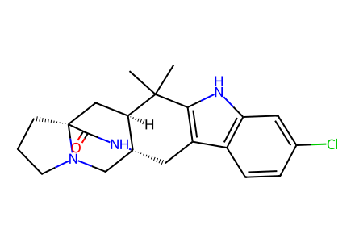
CC1(C)c2[nH]c3cc(Cl)ccc3c2C[C@@]23CN4CCC[C@]4(C[C@@H]12)C(=O)N3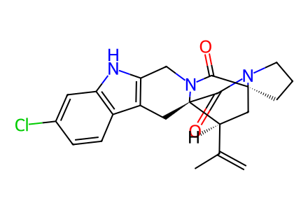
C=C(C)[C@@H]1C[C@]23CCCN2C(=O)[C@]12Cc1c([nH]c4cc(Cl)ccc14)CN2C3=O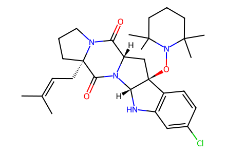
CC(C)=CC[C@]12CCCN1C(=O)[C@@H]1C[C@]3(ON4C(C)(C)CCCC4(C)C)c4ccc(Cl)cc4N[C@@H]3N1C2=O